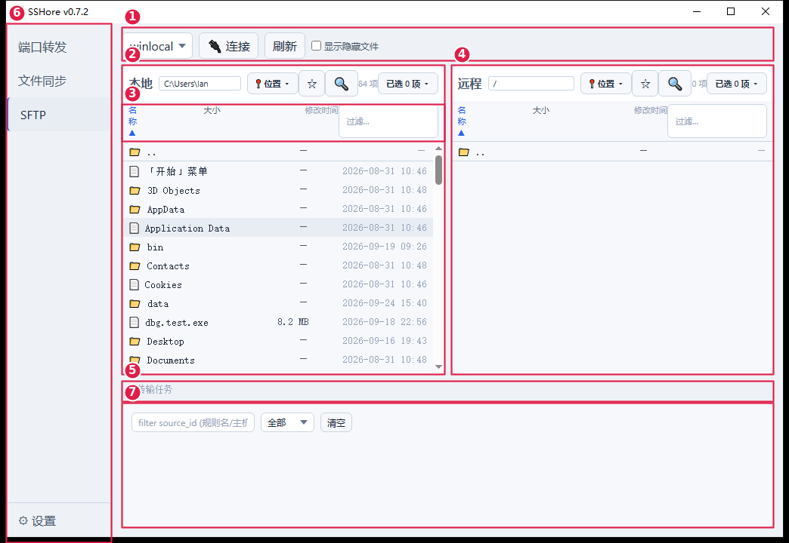

基线 v0.7.2（master 494978f，就是已发布的 exe）｜实拍图为浅色主题（该环境系统主题为浅色，深色主题结构完全相同、只是配色不同）｜编号 ①②… 在实拍图、线框图、对照表三处一一对应

红色框＝区域边界，红圈数字＝编号。此图取自 0.7.2 的 Windows 真机冒烟测试（/tmp/rel072-shots/00-sftp.png 原图另存为 sftp-ui-current-live.png）。
③ 行是我按实拍 1:1 复刻的：窗口 1044px 宽时「名称 ▲」被挤成 3 行、同时「过滤…」框被拉伸到约 44px 高——这两个都是实测现象，不是画错。
尺寸实测：侧栏 140px／工作区 padding 12px／面板间距 8px／列宽 大小 88px、修改时间 140px／过滤框 110px／日志面板 140px（外框 534→699）／传输队列上限 140px。
position: fixed，宽 260px，max-height: 60vhmax-height: 46vh，上限 500 条| # | 区域 | 当前表现（v0.7.2 实测） | 代码位置 |
|---|---|---|---|
| 1 | 顶部工具条 | 主机下拉 + 连接/断开 + 刷新 + ☐显示隐藏文件，四项平铺一行，没有分组、没有连接状态指示；未连接时“刷新”灰置。 | SftpView.vue:942-952 |
| 2 | 面板头（本地/远程各一份） | 一行塞 7 个元素：标题 + 可编辑路径框 + 📍位置 + ☆ + 🔍 + “N 项” + “已选 N 项 ▾”；1044px 窗口里路径框只剩约 150px，长路径被截断（远程显示 / 时几乎空一条）。 | FilePane.vue:184-219 |
| 3 | 列头 + 过滤框 | 「名称 ▲ / 大小 / 修改时间」与 110px 的「过滤…」同处一行；实测「名称 ▲」被挤成 3 行、过滤框被拉伸成 ~44px 高，两者把行高撑到 49px。 | FilePane.vue:221-226, 287 |
| 4 | 远程面板 | 与本地同构；未连接时路径框、位置、收藏、深搜按钮照样显示（各自有“无主机”分支），操作后才给反馈。 | SftpView.vue:968-979 |
| 5 | 传输队列 | 空态一行灰字「无传输任务」；有任务时每行＝名称 · 大小|耗时|速度|ETA · 状态 · 备注 · 取消/重试/续传/清理 + 3px 进度条，底部一行汇总 + “复制失败清单”。 | TransferQueue.vue:62-91（:94 上限 140px） |
| 6 | 左侧导航 | 端口转发 / 文件同步 / SFTP（当前项左蓝条）/ ⚙设置（吸底＋更新徽标），固定 140px。 | App.vue:81-101, 105 |
| 7 | 日志面板 | 固定 140px 高、不会随窗口长高：来源 chips 行（仅有来源分组时出现）+ 过滤栏（filter 输入 + 级别下拉 + 清空）+ 日志行。 | SftpView.vue:983, 1029；LogPanel.vue:69-99 |
| 8 | 位置弹层 | 点 📍位置 后 fixed 弹出（宽 260px、≤60vh）：筛选框 + 预设/盘符 + 最近 + 收藏 分段，每段超 8 行出现「展开全部 N / 收起」。弹层会盖住左面板的路径框与列表，长路径还会出现横向滚动条。 | FilePane.vue:193-207, 269-275；utils/positions.js |
| 9 | 批量动作菜单 | 「已选 N 项 ▾」在动作列表非空时恒显示（0 选中也显示）；菜单绝对定位、右对齐，最宽 160px。 | FilePane.vue:211-218, 279-282 |
| 10 | 右键菜单 | 跟随鼠标 fixed 定位；两面板条目不同，删除项带分隔线。 | SftpView.vue:985-999；ContextMenu.vue |
| 11 | 深搜浮层 | 居中模态（遮罩 0.5 黑）：搜索框 + 「命中 N 项」说明行 + 命中列表（名/大小/时间）；空模式只提示、不发起搜索。 | SearchOverlay.vue:105-134, 137, 144 |
| 12 | 对话框 | 重命名 / 新建文件夹 / 冲突确认，居中模态；遮罩 z-index 2000，浮层 1000 在其之下。 | AppDialog.vue、ConflictDialog.vue |
filter source_id (规则名/主机)；深浅主题都跟随系统（theme: system）。下一步：你直接回编号就行，例如「③ 列头重排」「② 面板头拆两行」「⑧ 位置弹层改窄/贴按钮」。收到编号后我先出调整方案（不直接改代码），确认后再落盘。